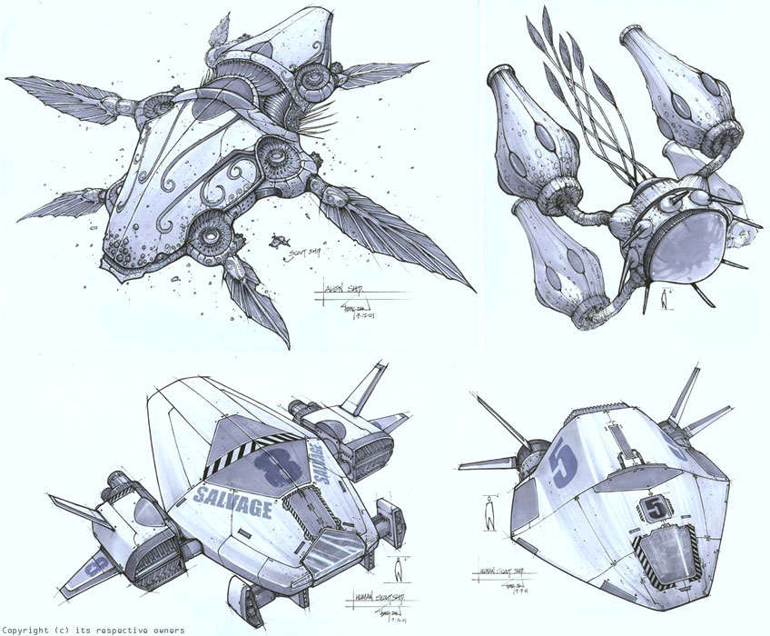

- 1
- 2
- 3
- 4
角色直升90级服务正式推出！叮！
我们非常高兴地宣布，《魔兽世界》角色直升90级服务已于今天正式推出。
如果你很想尝试一个新的职业或种族，但又苦于没有时间练级，那角色直升90级服务也许正适合你。此外，角色直升90级服务还可以让之前暂离的战友们快速地追上小伙伴们的步伐，并再次开始一起冒险。该服务价格为150战网点数，在购买该服务后，玩家能够立即将自己账号下一个《魔兽世界》角色直接提升到90级
大服务器实装维护公告
自第一组测试大服务器组（加基森＋黑暗虚空）测试配对开始以来，我们对该配对进行了监测，到目前，我们发现服务器状况非常稳定，游戏环境优化明显。测试配对上的玩家们非常活跃，迅速习惯了热闹的新环境，结交了新战友。同时，我们听到了不少玩家的呼声，希望能够在各个服务器迅速地实装大服务器技术，以便大家都能体验到该技术带来的便利和乐趣。因此，我们已正式启动中国地区大服务器实装的配对工作。
《德拉诺之王》的种族特长
我们计划在《德拉诺之王》资料片对种族特长做出一些改动。在我们之前发布的一篇“开发者与你聊”（ 压缩与梳理）博文中我们对改动理念进行概述。在此，我们希望向大家介绍即将到来改动的相关细节。
为了保持各个种族间的一致性，我们决定削弱过于突出的部分种族特性，然后建立起一条公平的基准线和其他种族都能达到对应的标准。我们根据需要对一些原有的被动技能进行了改进，替换掉了过时的被动技能，并增加了若干全新的被动技能。从根本上说，我们的目标是让各个种族能够实现平起平坐。


-
- 前言
- 目录
-
- 1.1节
- 1.2节
-
- 2.1节
- 2.2节
-
-
- 3.1.1节
- 3.1.2节
- 3.2节
-
-
- 4.1节
- 4.2节
Modal
完善中